FG Albertelli
Sartoria italiana e sguardo contemporaneo: per FG Albertelli un posizionamento costruito su un equilibrio delicato, raccontato con un solo carattere e un solo blu.
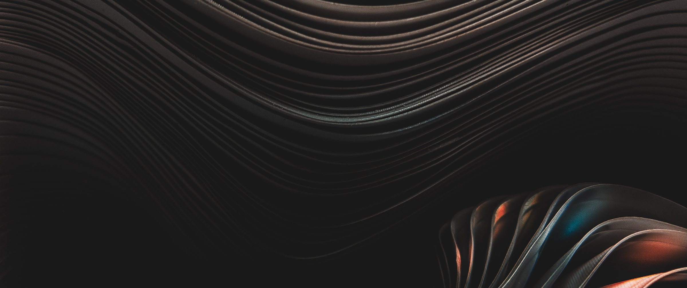
01 — Tre aree
La tradizione da cui il marchio viene, l’evoluzione verso cui va, la costruzione che le tiene insieme.
Le parole del posizionamento
3 aree 48 parole
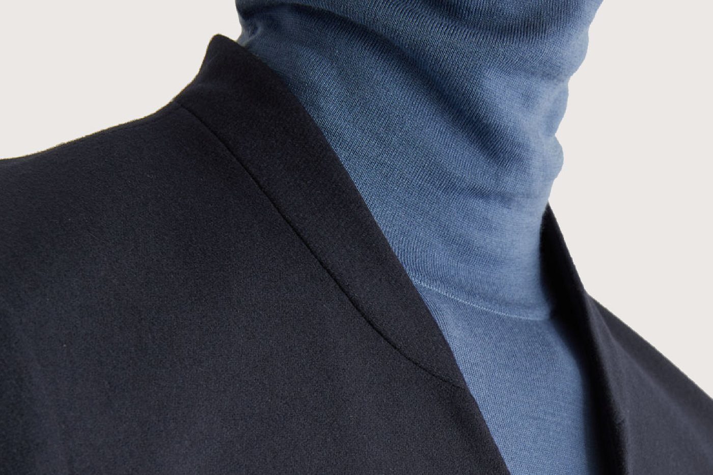
Tradizione
Il rispetto della storia e dell’eccellenza italiana: dietro ogni idea nuova, la sostanza dell’esperienza.
- Heritage
- Passione
- Tessuti
- Coordinazione
- Estetica
- Relazioni
- Sartoria
- Tailor made
- Made in Italy
- Perfezione
- Consulenza
- Attenzione e cura
- Manifattura
- Eccellenze locali
- Stile
- Eleganza
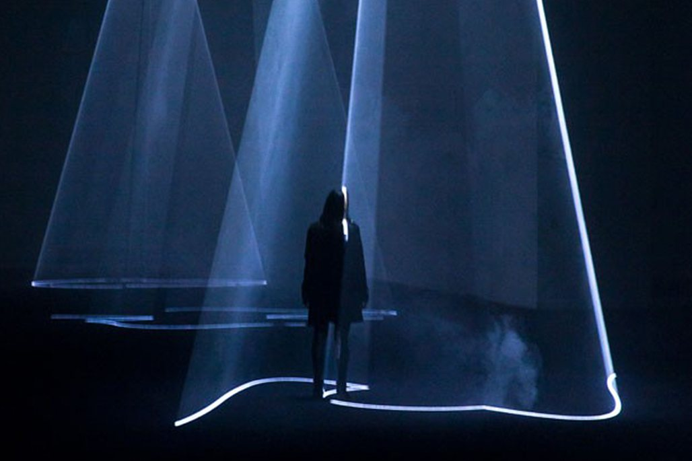
Evoluzione
L’innovazione come nuovo approccio alla tradizione e una nuova idea di gestione della materia.
- Urban
- Modernità
- Freschezza
- Adattamento
- Smartness
- Tecnologia
- Flessibilità
- Trasformazione
- Funzione
- Funzionalità
- Agilità
- Performance
- Originalità
- Comodità
- Prontezza
- Cambiamento
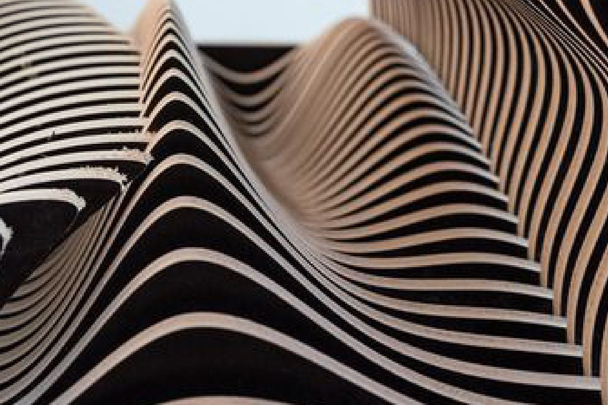
Costruzione
Progetto, composizione, geometria: una manifattura che nasce dall’ascolto e va oltre la sartoria.
- Progettazione
- Metodo
- Scienza
- Disegno
- Studio
- Teoria
- Destrutturazione
- Architettura
- Misura
- Forme
- Proporzioni
- Arte
- Produzione
- Personalizzazione
- Processo
- Approccio
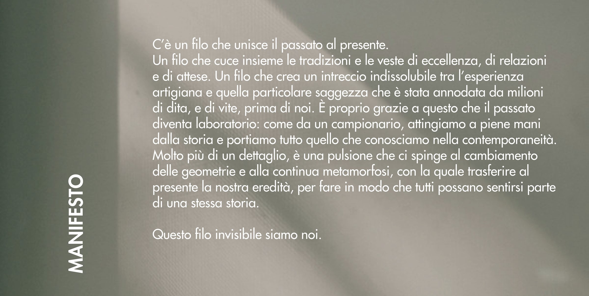
02 — Il doppio
Tradizione ed evoluzione sono due anime della stessa persona. FG è il punto in cui si incontrano.
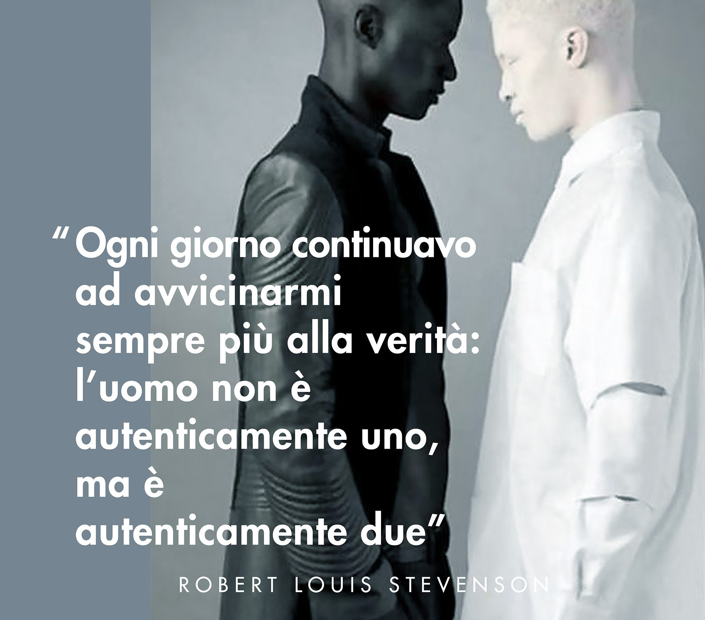
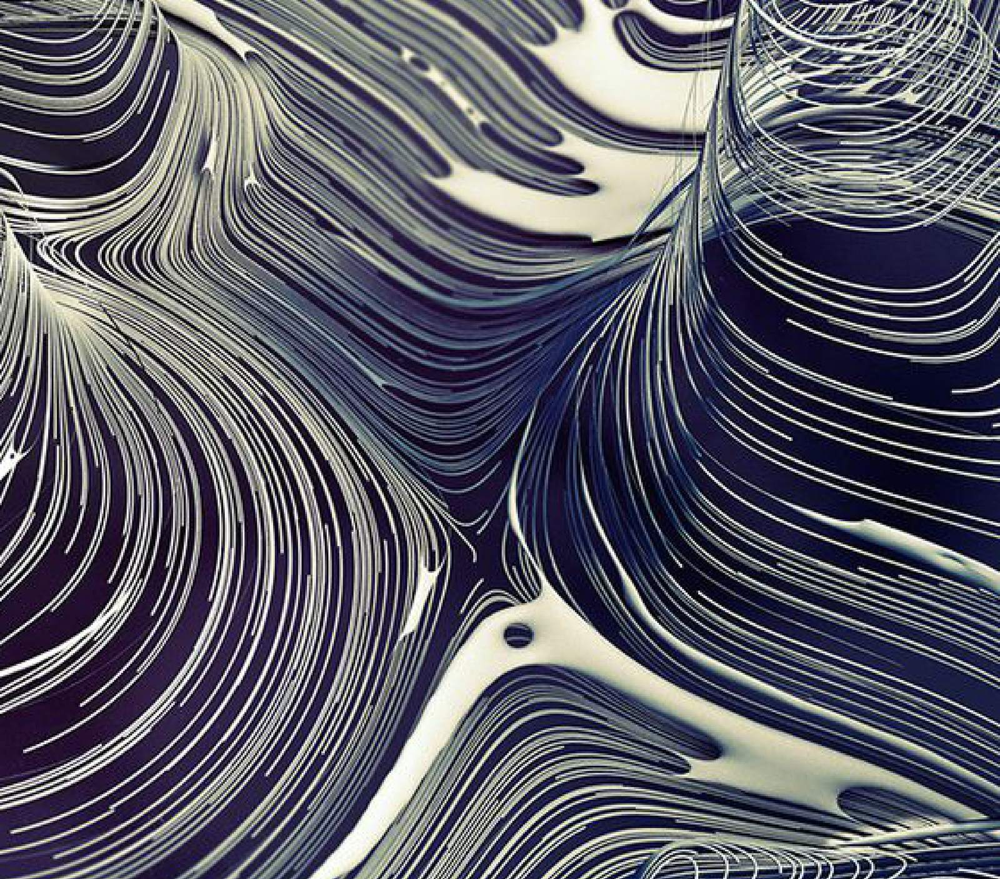
03 — Un solo carattere
Come i grandi nomi della moda, FG passa a un bastoni geometrico: il Futura, nato nel 1928 e ancora attuale.
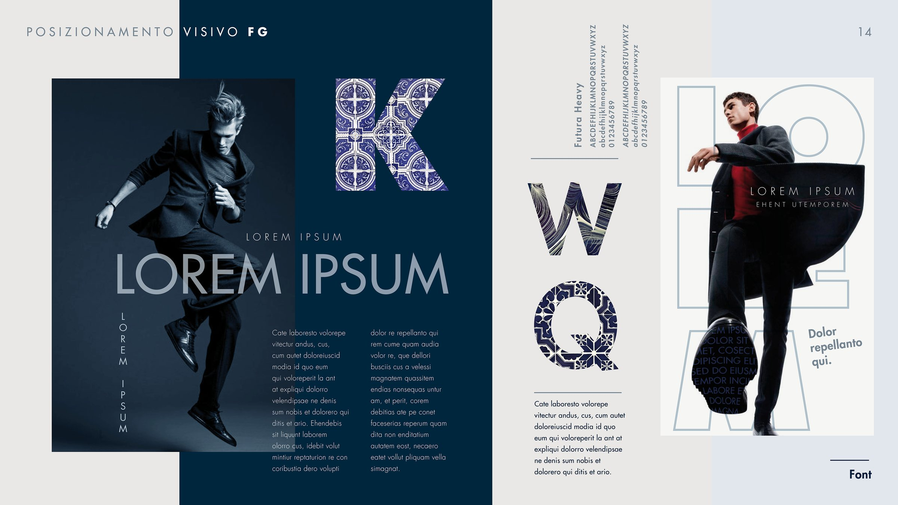
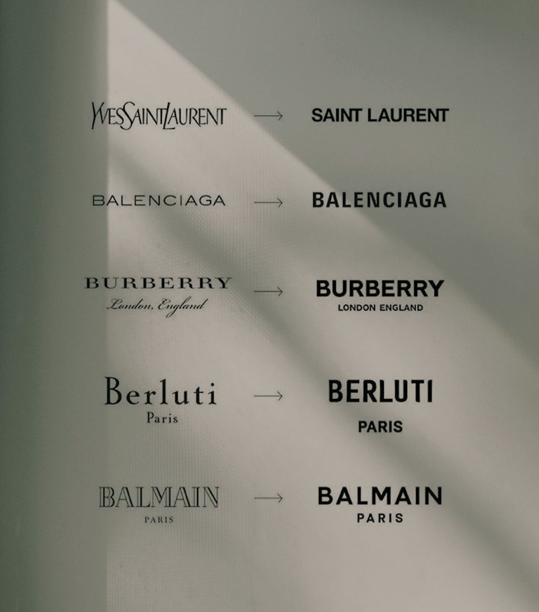
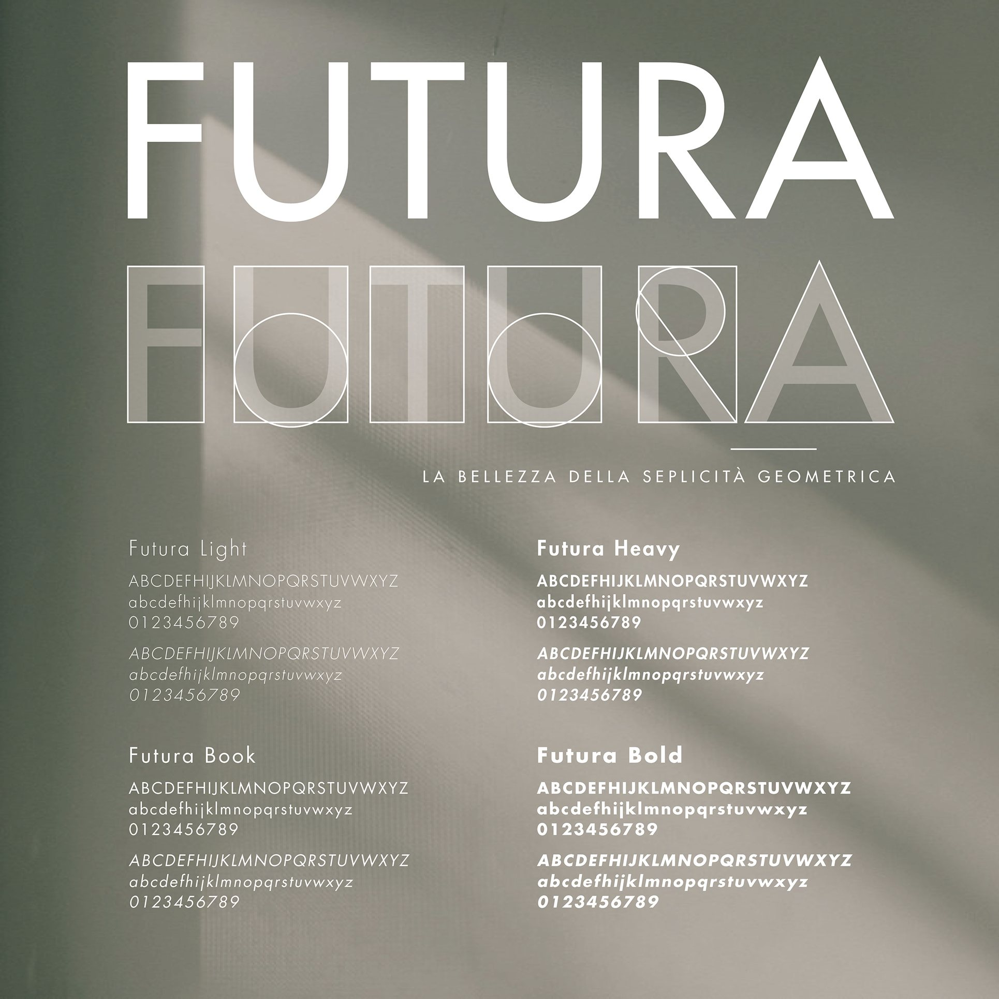
04 — Un solo blu
Il blu FG sta esattamente tra il blu mare e il nero. Attorno, cromie neutre che accompagnano i capi.
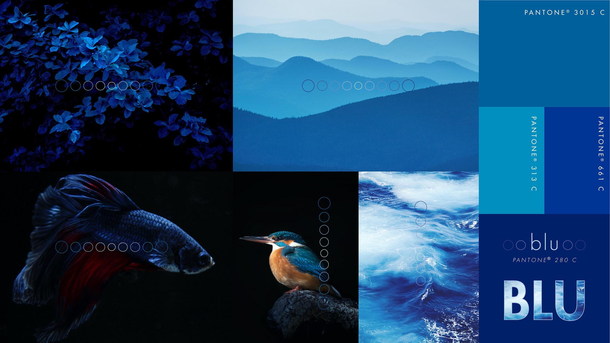
05 — Il sito
Il posizionamento diventa sito: fotografia in bianco e nero, il blu FG e molto spazio attorno ai capi.
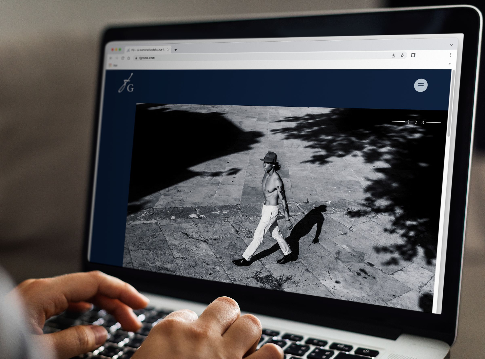
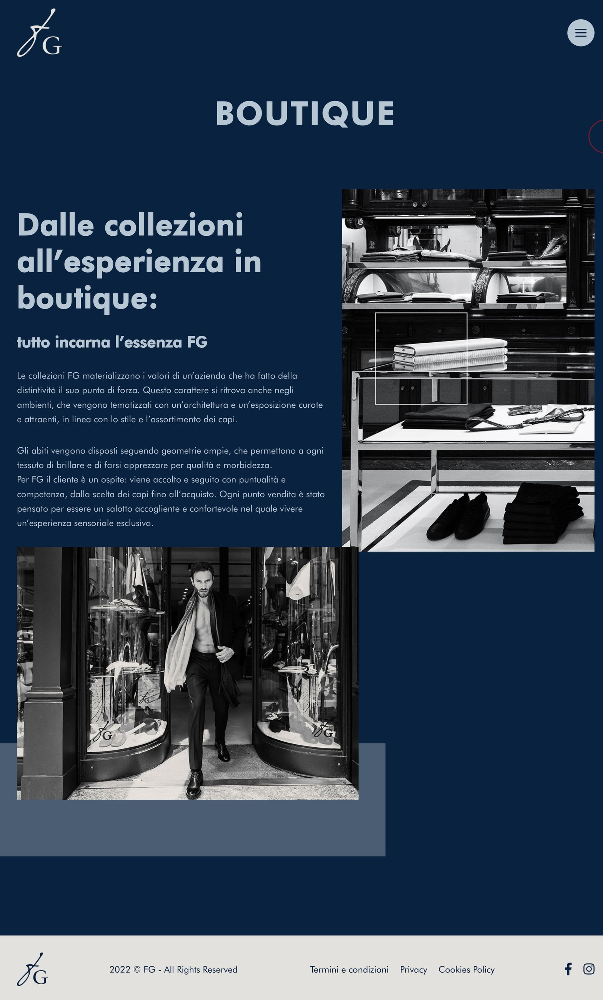
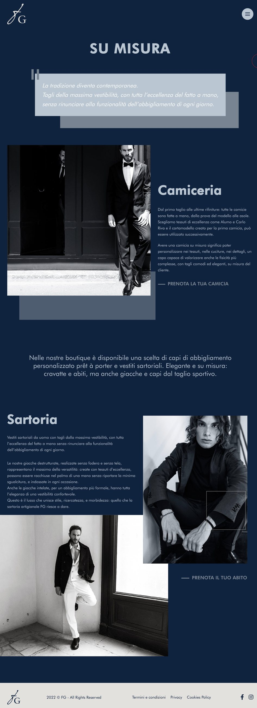